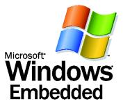

Microsoft Windows Embedded
The Windows Embedded Family of operating systems |
Windows Embedded Family
The Windows Embedded platform -- consisting of Windows CE and Windows XP Embedded -- provides the technology, tools and resources to get your device to market faster. Regardless of which operating system you ultimately choose, using a Windows Embedded software platform provides important benefits for your business: - Access to the World's Leading Technology Portfolio -- Each software platform provides a comprehensive and scalable set of operating system technologies in componentized form so you can incorporate your choice of Windows-based features and services. Integrated operating system and application development tools allow you to rapidly develop your device and reduce your time-to-market. With support for a broad range of hardware and software, you can choose the processor, applications, services, and drivers best suited to the functionality and cost of your device.
- Unparalleled Business Value and Agility -- Windows Embedded operating systems enable faster time-to-market with comprehensive feature sets and easy-to-use developer tools that enable you to reduce project duration. They also allow you to decrease your cost-to-market by investing fewer man-hours, developing less customized code, and reducing the need for third-party intellectual property. The Windows Embedded licensing model provides scalable engagement options to suit your needs and enables low up-front investment so that the vast majority of your expenditure happens after your device is shipping and is successful.
- Commitment and Support to Sustain Your Long-Term Market Leadership -- Microsoft is committed to your success. Windows Embedded platforms are backed by industry-leading research and a long-term innovation roadmap, as well as a world-class development organization, a range of support options, and programs to make using Windows technology easy and scalable. And, with a worldwide network of over 1,800 partners in 55 countries, you gain access to an ecosystem of value-add resources and services that includes third-party products and services, Windows Embedded Newsgroups, online chats and webcasts, and technical content provided by the Microsoft Developer's Network (MSDN).
The guiding principle of the embedded business model at Microsoft is simple: when our embedded customers are successful, we're successful.
Products
Click each product name for more details . . . - Windows CE -- Windows CE is the successor to Windows CE 3.0. Designed from the ground up for the embedded marketplace, Windows CE combines an advanced, real-time embedded operating system with powerful tools for rapidly creating the next generation of smart, connected and small-footprint devices. With a complete operating system feature set and comprehensive development tools, Windows CE contains the features developers need to build, debug and deploy customized devices.
- Windows XP Embedded -- Windows XP Embedded is the embedded operating system that delivers the power of Windows in componentized form to allow developers to rapidly build reliable and advanced embedded devices. Based on the same binaries as Windows XP Professional, Windows XP Embedded contains over 10,000 individual feature components so developers can choose and achieve optimum functionality while managing or reducing footprint in a customized device image. Popular device categories for building operating systems using Windows XP Embedded include retail point-of-sale terminals, thin clients and advanced set-top boxes.
- .NET Compact Framework -- The Microsoft .NET Compact Framework is a key part of realizing Microsoft's goal to provide customers with great experiences—any time, any place, and on any device. The .NET Compact Framework's managed code and XML Web services enable the development of secure, downloadable applications on devices such as personal digital assistants (PDAs), mobile phones, and set-top boxes.
- Windows Mobile -- Windows Mobile software extends the familiar Windows experience to mobile devices, helping you to maximize your time, enjoy free moments, and stay in touch with both what and who matters to you. Windows Mobile lets you:
- Have Everything Together
- Stay in Touch
- Work Away
- Sync Up
- Enjoy the Moment
Windows Mobile and Embedded Community Resources
Click each title for more details . . .
Windows Embedded Developer Community
Windows Embedded has one of the richest community experiences to help developers of all devices get the support that they need. Learn more about our Windows Embedded Community. - Windows CE Shared Source Initiative -- Shared Source is a Microsoft licensing framework designed to enable increased customer and developer community access to Microsoft source code, while preserving the intellectual property protections essential for a healthy software business ecosystem. Shared Source is a Microsoft-wide philosophy covering a variety of licensing programs that can be individually tailored to the diverse needs of customers and developers who require source code access.
- DevWire Newsletter -- DevWire is a monthly newsletter that is dedicated to development, technical, business, and event news and information about Windows Embedded platforms and tools. You sign up for DevWire and find past newsletter editions here.
- Webcasts -- View the latest Webcasts, audio broadcasts, and video programs for insight from the experts about Windows Embedded development.
- Chats -- Find out when the next technical chat occurs in your time zone. Read and listen to archived chats about different technical topics about the Windows Embedded family of operating systems.
- Third-Party Community Web Sites -- Refer to this compilation of links to third-party sites that focus on developer resources for Windows Embedded products.
Windows Mobile Developer Community
Get the help you need from mobile and embedded online communities. You'll save time by tapping into an online community of peers on MSDN and elsewhere who are building applications similar to yours. - Windows Mobile News -- Subscribe to the Windows Mobile developer newsletter, a monthly newsletter highlighting the latest news and product information on Windows Mobile-based devices, including Pocket PC and Smartphone.
- Mobile Weblogs -- Keep up-to-the-minute on what Microsoft mobile and embedded product managers and mobility industry experts are thinking.
- Webcasts -- Take a look at the Windows Mobile Webcast schedule, review the content of previous Webcasts, or get more information on Microsoft Webcasts.
- Chats -- Check out the calendar of upcoming chats for opportunities to engage with Microsoft's technology experts in real-time. Transcripts of past chats are also available.
- Third-Party Community Web Sites -- Find links to third-party Web sites with content related to mobile and embedded application development.
For Further Information
Click on the topics in the right-hand column of this page, and visit . . .
the Microsoft Windows Embedded Development Center
 |
|